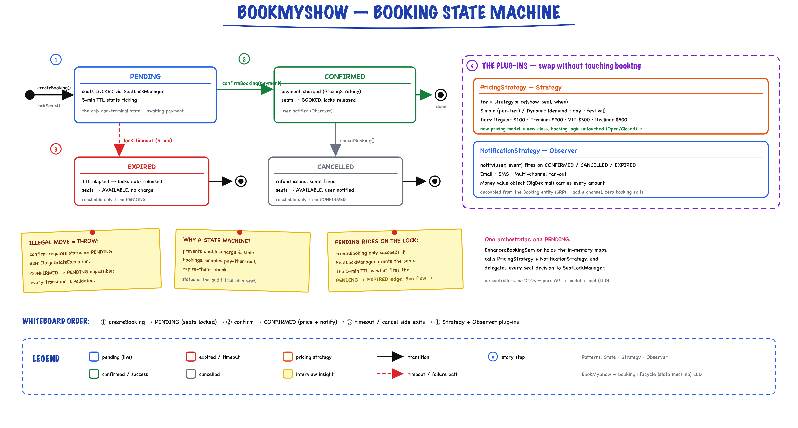
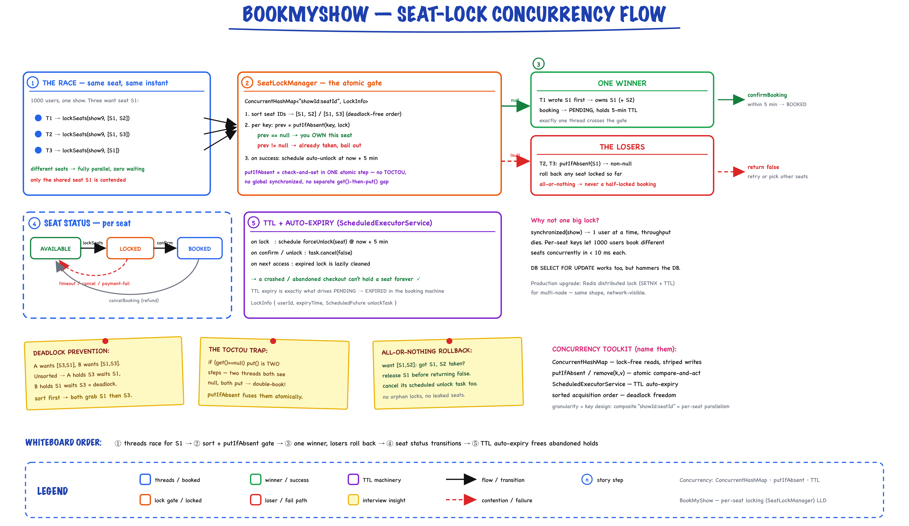

Movie Booking System // BookMyShow
SDE3-level low-level design with per-seat locking, Strategy pricing, Observer notifications, and concurrent booking safety. 38 files, production-ready concurrency.
01 — Requirements
Functional
- Movie Management — Add/update movies with title, genre, language, duration, rating
- Theater & Screen — Multiple theaters per city, each with multiple screens and configurable seat types (REGULAR, PREMIUM, VIP, RECLINER)
- Show Scheduling — Schedule shows with start/end time, dynamic pricing per seat type
- Real-time Seat Map — View available seats instantly, distinguish locked/booked/available
- Seat Locking — Temporary lock (5 min) during booking; auto-release on timeout
- Payment & Confirmation — Process payment, confirm booking, release locks on failure
- Cancellation — Cancel confirmed bookings, auto-release seats back to AVAILABLE
- Search & Filter — Find movies by city, theater, language, genre, date
Non-Functional
- Performance — Seat availability < 100ms, booking completion < 500ms, 10,000+ concurrent bookings
- Concurrency — Per-seat locking (not show-level), thread-safe lock manager, deadlock prevention via sorted seat IDs
- Reliability — ACID for payment + booking, automatic cleanup of expired locks, rollback on failure
- Scalability — Distributed locks (Redis) for production, DB sharding by city, caching for metadata
02 — Core Entities
| Entity | Type | Key Fields |
|---|---|---|
| Movie | Entity | id, title, description, duration, language, genre, cast, rating |
| Theater | Entity | id, name, address, city, List<Screen> |
| Screen | Entity | id, name, theaterId, capacity, List<Seat> |
| Show | Entity | id, movieId, screenId, startTime, endTime |
| Seat | Value Object | id, seatNumber, type (SeatType), price — equals/hashCode by id |
| Booking | Entity | id, userId, showId, List<Seat>, totalAmount, state: BookingState (getStatus() → BookingStatus), payment, bookingTime, observers |
| Payment | Entity | id, bookingId, amount, method (PaymentMethod), status (PaymentStatus), paymentTime |
| User | Entity | id, name, email, phone |
Enums
| Enum | Values |
|---|---|
| SeatType | REGULAR ($100), PREMIUM ($200), VIP ($300), RECLINER ($500) |
| BookingStatus | PENDING, CONFIRMED, CANCELLED, EXPIRED |
| PaymentStatus | PENDING, SUCCESS, FAILED, REFUNDED |
| PaymentMethod | CREDIT_CARD, DEBIT_CARD, UPI, NET_BANKING, WALLET |
| City | BANGALORE, MUMBAI, DELHI, HYDERABAD, CHENNAI, KOLKATA, PUNE, AHMEDABAD |
| Genre | ACTION, COMEDY, DRAMA, HORROR, ROMANCE, THRILLER, SCI_FI, DOCUMENTARY, ANIMATION |
| Language | ENGLISH, HINDI, TAMIL, TELUGU, KANNADA, MALAYALAM, BENGALI, MARATHI |
03 — Design Patterns
The interview differentiator — six patterns, each earning its place.
Strategy Pattern
PricingStrategy (Simple / Dynamic) and NotificationStrategy (Email / SMS) are injected into EnhancedBookingService. Easy to add new pricing models or channels without changing booking logic.
Observer Pattern
BookingNotifier (a BookingObserver) notifies users on booking confirmation, cancellation, expiry. Decoupled notification system — swap email for SMS or push without touching booking code.
Singleton Pattern
Booking states are stateless singletons (PendingState.INSTANCE, ConfirmedState.INSTANCE, …). All mutable data lives on Booking, so one instance per state is shared safely. (SeatLockManager is a plain instance owned by the service, not a singleton.)
Composite Pattern
MultiChannelNotificationStrategy is itself a NotificationStrategy that fans out to a list of channels (addChannel). The service sees one strategy either way.
State Pattern
Booking delegates confirm / cancel / expire to its BookingState. Each state returns the next state or throws IllegalStateException on an illegal move.
Cache-Aside
MovieCache (LRU + TTL) sits in front of the ConcurrentHashMap movie store. getMovieById checks the cache, falls back to the map, then populates the cache.
04 — Booking State Machine
Why track state? A booking progresses through well-defined states. Each transition has side effects (lock/unlock seats, process payments). Illegal transitions throw immediately — no stale bookings.

Booking lifecycle: createBooking() locks seats and enters PENDING (5-min TTL) → confirmBooking(payment) prices via PricingStrategy, marks seats BOOKED and notifies via Observer → CONFIRMED. Side exits: PENDING → EXPIRED on lock timeout, CONFIRMED → CANCELLED on cancel (refund). Every transition is guarded — an illegal move throws. Pricing and notification are swappable Strategy / Observer plug-ins.
Booking Status Transitions
| From | To | Trigger | Side Effects |
|---|---|---|---|
| PENDING | CONFIRMED | confirmBooking(bookingId, payment) | Re-check caller still holds locks, require payment SUCCESS, mark seats BOOKED, release locks, notify |
| PENDING | EXPIRED | booking.expire() (lock timeout) | Terminal state, notify user (seat locks already freed by forceUnlock) |
| PENDING | CANCELLED | cancelBooking() | Release seat locks, notify user |
| CONFIRMED | CANCELLED | cancelBooking() | Remove seats from bookedSeats → AVAILABLE, notify user (refund: hypothetical follow-up) |
Seat Status & Lock Concurrency Flow

The concurrency story behind the seat states: threads race for the same seat → SeatLockManager sorts seat IDs (deadlock-free) and does an atomic putIfAbsent per showId:seatId key → exactly one winner, losers roll back partial locks (all-or-nothing) → seat walks AVAILABLE → LOCKED → BOOKED, or back to AVAILABLE on timeout / cancel / payment failure. A ScheduledExecutorService TTL auto-frees abandoned holds after 5 min — the same expiry that drives PENDING → EXPIRED.
Confirm Booking — State Guard
public boolean confirmBooking(String bookingId, Payment payment) { Booking booking = getBooking(bookingId); String showId = booking.getShowId(); synchronized (booking) { // per-booking lock, not global Set<String> booked = bookedSeats.computeIfAbsent( showId, k -> ConcurrentHashMap.newKeySet()); // Re-check: lock may have expired, or the seat was booked meanwhile for (Seat seat : booking.getSeats()) { if (!seatLockManager.isLockedByUser(showId, seat.getId(), booking.getUserId()) || booked.contains(seat.getId())) { throw new SeatNotAvailableException("Seat no longer held: " + seat.getId()); } } booking.confirm(payment); // State guard: only PendingState allows it (payment must be SUCCESS) List<String> seatIds = new ArrayList<>(); for (Seat seat : booking.getSeats()) { booked.add(seat.getId()); seatIds.add(seat.getId()); } seatLockManager.unlockSeats(showId, seatIds, booking.getUserId()); // Seats move from lock map to booked set; BookingNotifier fires via Observer } return true; }
05 — Seat Selection & Locking
The hardest part of BookMyShow. 1,000 users picking seats for the same show — per-seat locking lets them proceed in parallel as long as they pick different seats.
Locking Approaches Compared
| Approach | Granularity | Throughput | Verdict |
|---|---|---|---|
| Show-level synchronized(show) | Entire show | 1 user at a time | Not scalable |
| DB Row Locking SELECT FOR UPDATE | Per seat (DB) | Medium | High DB load |
| Per-Seat In-Memory | Per seat (memory) | High (< 10ms) | Chosen approach |
| Redis Distributed Lock | Per seat (distributed) | High | Production upgrade |
SeatLockManager — Core Implementation
public class SeatLockManager { // Key: "showId:seatId" → LockInfo private final ConcurrentHashMap<String, LockInfo> seatLocks = new ConcurrentHashMap<>(); private final ScheduledExecutorService scheduler = Executors.newScheduledThreadPool(2); private static final long LOCK_TIMEOUT_MS = 300_000; // 5 minutes static class LockInfo { final String userId; final long expiryTime; final ScheduledFuture<?> unlockTask; } }
Composite key showId:seatId enables per-seat granularity — 1000 users booking different seats for the same show proceed in parallel.
All-or-Nothing Lock Acquisition
public boolean lockSeats(String showId, List<String> seatIds, String userId) { // 1. Sort seat IDs to prevent deadlock List<String> sorted = new ArrayList<>(seatIds); Collections.sort(sorted); long expiry = System.currentTimeMillis() + LOCK_TIMEOUT_MS; List<String> acquiredKeys = new ArrayList<>(); try { for (String seatId : sorted) { String key = seatKey(showId, seatId); cleanExpiredLock(key); // drop a stale lock first ScheduledFuture<?> task = scheduler.schedule( () -> forceUnlock(showId, seatId), LOCK_TIMEOUT_MS, TimeUnit.MILLISECONDS); LockInfo lock = new LockInfo(userId, expiry, task); LockInfo existing = seatLocks.putIfAbsent(key, lock); // atomic check-and-set if (existing != null) { task.cancel(false); throw new IllegalStateException("Seat " + seatId + " is locked by another user"); } acquiredKeys.add(key); } return true; } catch (Exception e) { // Roll back every lock acquired so far (owner-only, remove(key, lock)) for (String key : acquiredKeys) { LockInfo lock = seatLocks.get(key); if (lock != null && lock.userId.equals(userId)) { lock.unlockTask.cancel(false); seatLocks.remove(key, lock); } } return false; } }
Deadlock Prevention
Always acquire locks in sorted seat ID order. If User A wants seats [S3, S1] and User B wants [S1, S3], both acquire in order [S1, S3] — no circular wait.
// Without sorting: User A locks S3, waits for S1 // User B locks S1, waits for S3 → DEADLOCK // With sorting: Both lock S1 first, then S3 → no deadlock Collections.sort(sortedSeatIds);
Auto-Expiry with ScheduledExecutorService
// Schedule auto-unlock when lock is acquired ScheduledFuture<?> task = scheduler.schedule( () -> forceUnlock(showId, seatId), LOCK_TIMEOUT_MS, TimeUnit.MILLISECONDS ); // Cancel the scheduled task if the booking is confirmed / seats unlocked before timeout lock.unlockTask.cancel(false);
06 — Pricing Strategy
Why Strategy? Pricing rules change frequently — festivals, weekends, new seat tiers. A new pricing model = a new class, zero changes to booking logic.
SeatType Enum with Base Pricing
public enum SeatType { REGULAR(100.0), PREMIUM(200.0), VIP(300.0), RECLINER(500.0); private final double basePrice; SeatType(double basePrice) { this.basePrice = basePrice; } public double getBasePrice() { return basePrice; } }
Pricing Modifiers (Interview Talking Points)
| Modifier | Logic | Pattern |
|---|---|---|
| Base price | Per-SeatType Money map inside each strategy | Strategy: SimplePricingStrategy (flat) |
| Evening show (after 6 PM) | 1.2x multiplier | DynamicPricingStrategy |
| Weekend pricing | 1.3x multiplier | DynamicPricingStrategy |
| First-day-first-show | 1.5x multiplier | Decorator (hypothetical follow-up) |
| Offers & coupons | Flat discount or % | Strategy: CouponPricingStrategy (hypothetical follow-up) |
"In production I'd stack decorators: new WeekendPricing(new PeakHourPricing(baseStrategy))"
07 — Key Algorithms
Seat Availability Check
public List<Seat> getAvailableSeats(String showId) { Show show = getShow(showId); Screen screen = screens.get(show.getScreenId()); Set<String> booked = bookedSeats.getOrDefault(showId, Collections.emptySet()); return screen.getSeats().stream() .filter(seat -> !booked.contains(seat.getId())) .filter(seat -> !seatLockManager.isLocked(showId, seat.getId())) .collect(Collectors.toList()); } // Time: O(n) where n = seats in screen // Checks both booked set AND active locks
Show Search by Movie + City
public List<Show> getShowsForMovie(String movieId, City city) { return shows.values().stream() .filter(show -> show.getMovieId().equals(movieId)) .filter(show -> { Screen screen = screens.get(show.getScreenId()); if (screen == null) return false; Theater theater = theaters.get(screen.getTheaterId()); return theater != null && (city == null || theater.getCity() == city); }) .sorted(Comparator.comparing(Show::getStartTime)) .collect(Collectors.toList()); } // Traversal: Show → Screen → Theater → City
Booking Amount Calculation
// In createBooking(): delegate to the injected PricingStrategy Money totalMoney = pricingStrategy.calculatePrice(show, selectedSeats); double totalAmount = totalMoney.toBigDecimal().doubleValue(); // SimplePricingStrategy: sum of per-SeatType Money prices // DynamicPricingStrategy: base x weekend (1.3) x evening (1.2) per seat // O(m) where m = selected seats
Complexity Summary
| Operation | Time | Space |
|---|---|---|
| Seat availability | O(n), n = seats in screen | O(1) |
| Lock acquisition | O(m log m), m = selected seats (sorting) | O(m) |
| Lock check (isLocked) | O(1) per seat (HashMap) | O(k) total, k = active locks |
| Movie search | O(s), s = total shows | O(1) |
| Payment processing | O(1) | O(1) |
08 — Thread Safety
| Mechanism | Where | Why |
|---|---|---|
| ConcurrentHashMap | All data stores (movies, theaters, shows, bookings, seatLocks) | Lock-free reads, safe concurrent writes |
| putIfAbsent() | SeatLockManager lock acquisition | Atomic check-and-set prevents double-locking |
| remove(key, value) | SeatLockManager unlock | Atomic remove only if same LockInfo — prevents unlocking another user's lock |
| ConcurrentHashMap.newKeySet() | bookedSeats per show | Thread-safe Set for tracking booked seats |
| computeIfAbsent() | Initializing booked set per show | Atomic creation avoids race on first booking |
| ScheduledExecutorService | Lock timeout auto-release | Background thread pool schedules cleanup tasks |
| Sorted lock order | lockSeats() | Prevents deadlock when two users select overlapping seats |
| synchronized(booking) | confirmBooking() / cancelBooking() | Per-booking state transitions (not a global lock); confirm re-checks lock ownership inside it |
"I use per-seat locking with composite keys showId:seatId. Two users booking different seats for the same show proceed in parallel. Only overlapping seat selections contend. Combined with sorted acquisition order, deadlocks are impossible."
Double-Booking Prevention
// In lockSeats() -- atomic check-and-set LockInfo existing = seatLocks.putIfAbsent(key, lock); if (existing != null) { // Someone else holds the seat: cancel our timer, catch block rolls back acquiredKeys task.cancel(false); throw new IllegalStateException("Seat " + seatId + " is locked by another user"); } // In unlockSeats() -- owner-only release LockInfo lock = seatLocks.get(key); if (lock != null && lock.userId.equals(userId)) { lock.unlockTask.cancel(false); seatLocks.remove(key, lock); // only removes if same object -- never a newer owner's lock } // In confirmBooking() -- re-verify ownership before committing if (!seatLockManager.isLockedByUser(showId, seatId, userId) || booked.contains(seatId)) throw new SeatNotAvailableException("Seat no longer held: " + seatId);
09 — Service API
What to write on the whiteboard first.
interface BookingService { // Movie & Show Management List<Movie> searchMovies(title, City, Language); List<Show> getShowsForMovie(movieId, City); Show getShow(showId); // Seat Management List<Seat> getAvailableSeats(showId); boolean lockSeats(showId, seatIds, userId); void unlockSeats(showId, seatIds, userId); // Booking Management Booking createBooking(userId, showId, seatIds); boolean confirmBooking(bookingId, Payment); boolean cancelBooking(bookingId); Booking getBooking(bookingId); List<Booking> getUserBookings(userId); // Theater Management List<Theater> getTheaters(City); Theater getTheater(theaterId); }
10 — Happy Path Flow
Trace this end-to-end in the interview.
Failure Paths
| Failure | Trigger | Recovery |
|---|---|---|
| Seat already locked | putIfAbsent returns non-null | Rollback all acquired locks, return false |
| Payment fails | Payment status != SUCCESS | PendingState.confirm throws IllegalStateException; booking stays PENDING |
| Lock timeout | 5 min elapsed without confirmation | ScheduledExecutorService runs forceUnlock → seats AVAILABLE; a later confirmBooking fails the lock re-check (SeatNotAvailableException) |
| Seat already booked | Seat in bookedSeats set | Throw SeatNotAvailableException before lock attempt |
11 — Key Data Structures
// In-memory data stores Map<String, Movie> movies = new ConcurrentHashMap<>(); Map<String, Theater> theaters = new ConcurrentHashMap<>(); Map<String, Screen> screens = new ConcurrentHashMap<>(); Map<String, Show> shows = new ConcurrentHashMap<>(); Map<String, Booking> bookings = new ConcurrentHashMap<>(); Map<String, User> users = new ConcurrentHashMap<>(); // Seat tracking per show Map<String, Set<String>> bookedSeats = new ConcurrentHashMap<>(); // showId → Set of booked seatIds (ConcurrentHashMap.newKeySet()) // SeatLockManager (one instance, owned by EnhancedBookingService) ConcurrentHashMap<String, LockInfo> seatLocks; // "showId:seatId" → LockInfo { userId, expiryTime, unlockTask } // Background cleanup ScheduledExecutorService scheduler = Executors.newScheduledThreadPool(2); // auto-unlocks seats after LOCK_TIMEOUT_MS
12 — Interview Follow-up Q&A
How do you handle concurrent bookings for the same seat?
How would you implement distributed locking for production?
What happens if a user's seat lock expires before payment?
How do you prevent deadlocks when users select overlapping seats?
How would you implement different pricing tiers (peak hours, weekends, offers)?
How would you implement a waitlist for sold-out shows?
How would you handle cancellation refunds?
How would you scale to millions of concurrent users?
Why per-seat locking instead of show-level locking?
How would you handle the "phantom read" problem in seat selection?
How would you design the seat map UI interaction with the backend?
What custom exceptions do you define and why?
13 — Package Structure
bookmyshow/ ├── api/ │ ├── BookingService.java -- service interface (13 methods) │ ├── PricingStrategy.java -- calculatePrice(show, seats) → Money │ └── NotificationStrategy.java -- confirmed / cancelled / reminder ├── impl/ │ ├── EnhancedBookingService.java -- full business logic (implements BookingService) │ ├── SeatLockManager.java -- per-seat locking with timeouts │ ├── SimplePricingStrategy.java -- flat price per SeatType │ ├── DynamicPricingStrategy.java -- weekend / evening multipliers │ ├── EmailNotificationStrategy.java │ ├── SMSNotificationStrategy.java │ ├── MultiChannelNotificationStrategy.java -- Composite: fans out to channels │ └── BookingNotifier.java -- BookingObserver → NotificationStrategy ├── cache/ │ └── MovieCache.java -- LRU + TTL cache-aside for movies ├── model/ │ ├── Movie.java -- title, genre, language, duration, rating │ ├── Theater.java -- name, city, List<Screen> │ ├── Screen.java -- name, theaterId, capacity, List<Seat> │ ├── Show.java -- movieId, screenId, startTime, endTime │ ├── Seat.java -- seatNumber, type, price │ ├── Booking.java -- userId, showId, seats, state, payment, observers │ ├── BookingState.java -- State interface: confirm / cancel / expire │ ├── PendingState, ConfirmedState, CancelledBookingState, ExpiredState │ ├── BookingObserver.java -- update(booking) │ ├── Payment.java -- amount, method, status │ ├── User.java -- name, email, phone │ └── Enums: │ ├── SeatType -- REGULAR, PREMIUM, VIP, RECLINER │ ├── BookingStatus -- PENDING, CONFIRMED, CANCELLED, EXPIRED │ ├── PaymentStatus -- PENDING, SUCCESS, FAILED, REFUNDED │ ├── PaymentMethod -- CREDIT_CARD, DEBIT_CARD, UPI, etc. │ ├── City -- 8 Indian cities │ ├── Genre -- 9 movie genres │ └── Language -- 8 languages ├── exceptions/ │ ├── SeatNotAvailableException -- seat locked or booked │ ├── BookingNotFoundException -- invalid booking ID │ ├── ShowNotFoundException -- invalid show ID │ └── PaymentFailedException -- gateway error └── BookMyShowDemo.java -- showcases full booking flow
14 — Patterns Summary
| Pattern | Where | Why |
|---|---|---|
| Strategy | PricingStrategy, NotificationStrategy | Swap pricing algorithms and notification channels without changing booking logic |
| Observer | BookingObserver / BookingNotifier on every state change | Decoupled notification — swap email/SMS/push with zero code changes |
| Singleton | Stateless BookingState instances (PendingState.INSTANCE, …) | No per-booking state objects; mutable data stays on Booking |
| Composite | MultiChannelNotificationStrategy | One strategy fans out to many channels |
| State | Booking → BookingState: Pending / Confirmed / Cancelled / Expired | Illegal transitions throw; no status if-chains in the service |
| Cache-Aside | MovieCache in front of the ConcurrentHashMap movie store | Read-heavy movie lookups skip the store on a hit |
| Value Object | Seat (immutable after creation) | Thread-safe, equals/hashCode by id |
Key Takeaways for the Interview
- Seat locking is the hardest part — per-seat granularity with composite keys, sorted acquisition, atomic putIfAbsent, auto-expiry
- All-or-nothing lock — atomic putIfAbsent per seat, rollback on partial failure; confirm re-checks ownership
- Deadlock prevention — always sort seat IDs before locking
- Failure recovery — rollback on partial lock failure, auto-release on timeout, refund on cancellation
- Scale path — in-memory → Redis locks, single DB → sharded, monolith → microservices
38 files · per-seat concurrency · production-ready booking system